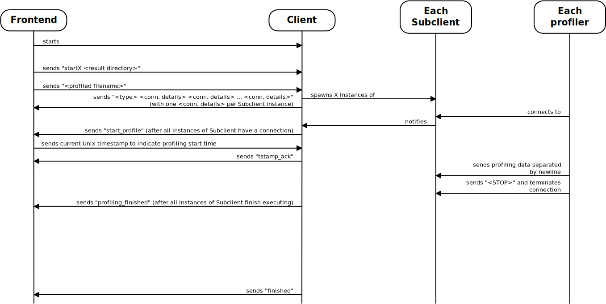

Welcome to the AdaptivePerf documentation for contributors!
To get started, please:
- Read "Communication between the frontend, server, clients, and profilers" below.
- Go through the source code, starting with
entrypoint.hpp/entrypoint.cppinsidesrcandsrc/serverand using the documentation along the way to get to know the specific classes and functions (you can browse "Namespaces" and "Classes" for this purpose).
Preprocessor definitions
These are the CMake-set preprocessor definitions you should be aware of:
SERVER_ONLY: set when AdaptivePerf is compiled only with the backend component (i.e. adaptiveperf-server).LIBNUMA_AVAILABLE: set when AdaptivePerf is compiled with libnuma support.APERF_CONFIG_FILE: the path to the AdaptivePerf config file, CMake sets it to/etc/adaptiveperf.confby default.APERF_SCRIPT_PATH: the path to the directory with AdaptivePerf "perf" Python scripts, CMake sets it to/opt/adaptiveperfby default.
AdaptivePerf config file
In the current version, there is only one field in the AdaptivePerf config file:
perf_path: the path to an installation directory of the AdaptivePerf-patched "perf" (withbinetc. directories inside). In case of no changes to the installation options, this is/opt/adaptiveperf/perfby default.
Tests
Making sure the tests pass and updating these when needed is crucial during the AdaptivePerf development. They are implemented using the GoogleTest framework and their codes are stored inside the test directory.
To enable tests in the AdaptivePerf compilation, run build.sh with -DENABLE_TESTS=ON. Afterwards, run ctest inside the newly-created build directory every time you want to run the tests.
Communication between the frontend, server, clients, subclients, and profilers
The backend (adaptiveperf-server) consists of the Server, Client, and Subclient components. The communication between these components and the frontend + profilers differs depending on whether adaptiveperf-server is run externally or internally. The diagrams below explain how this works for both cases.
Please note the following:
- In both cases, the frontend additionally sends the received subclient connection instructions directly to each profiler before waiting for "start_profile".
- In case of adaptiveperf-server running externally, if "p code_paths.lst" is sent by the frontend during the file transfer stage, no code_paths.lst file is actually created by the server. Instead, it consumes the received content (i.e. the list of source code paths) immediately to produce a source code archive.
If adaptiveperf-server is run externally with the frontend connecting to it via TCP, the communication between the frontend, profilers, and server components is as follows (each colour represents a machine; different-coloured blocks can therefore run on different machines, but they don't have to):
If adaptiveperf-server is run internally (i.e. as part of the adaptiveperf command) with the frontend connecting to it via file descriptors, the communication is as follows:

Generated by